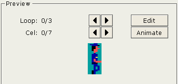
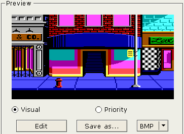

When you click on a view resource, you will see the something like this:

To change loops or cels, just click on the apprioriate left/right buttons.
When you click on a picture resource, you will see the something like this:

To view the visual or priority screen, select the appropriate radio button.
The picture viewer also allows you to save the currently displayed screen as a BMP file or any other image format supported by QT library.